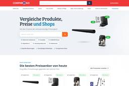

Ecommerce News
https://ecommercenews.eu/
Ecommerce News is a daily blog featuring news about the ecommerce industry in Europe. We write about cross-border, payments, omnichannel and much more!
フィード

WAPI wins FDI Insider Award for AI-driven fulfillment
Ecommerce News
European fulfillment provider WAPI has recently won an FDI Insider Award for Best AI-Driven E-Commerce Fulfillment & 3PL Platform. The company’s software uses in-house AI toolsto automate workflows and reduce errors. “This has led to 40 to 55 percent fewer parcels left uncollected after the pickup deadline”, says WAPI. WAPI…
19時間前

Arvato acquires Ekol Logistics
Ecommerce News
German supply chain service provider Arvato is acquiring Ekol Logistics in Türkiye. As a result, 15 warehouses and a total of 830,000 square meters in storage space will be added to Arvato’s fulfillment network. This brings Arvato’s total storage space in Türkiye to 1.2 million square meters, divided over 26…
2日前

‘72% of German TikTok Shop merchants sell across borders’
Ecommerce News
Most German merchants on TikTok Shop also sell products to European customers outside their home market. According to research commissioned by the platform, 72 percent of sellers have now gained cross-border experience. TikTok regularly commissions research into the economic impact of its platform in various countries, most recently in Germany…
2日前
Onbuy and Octopia expand partnership
Ecommerce News
Cashback marketplace Onbuy and Octopia have expanded their partnership in Europe. As a result, sellers get access to three marketplaces in one single integration: OnBuy, easyShop and Comet. The partnership should also make cross-border selling more accessible. OnBuy was founded in 2016 and is based in the United Kingdom. It…
4日前
Allegro and Zalando climb European top 10
Ecommerce News
Allegro and Zalando have both climbed two places in a ranking of Europe’s largest online marketplaces. Vinted is a new entrant in the top 10. The ranking is led by Amazon and dominated by companies from the US, Russia and China. German ecommerce data provider ECDB has ranked the largest…
5日前

Comparigo launches in two markets
Ecommerce News
Dutch price comparison platform Kieskeurig.nl is expanding into Europe. Under the name Comparigo it is now live in France and Germany. It already has more than 400 connected online stores per country. Kieskeurig.nl is a Dutch price comparison site where shoppers can see which online stores offer a product and…
5日前

DPD and GLS joint venture to reshape German parcel market
Ecommerce News
GLS and DPD plan to merge their parcel delivery operations in Germany in a joint venture. If competition authorities approve the deal, they will continue operating under the GLS brand. DPD will then disappear from the German market after more than fifty years. DPD (Deutscher Paket Dienst) was founded in…
9日前
Allegro GMV grows 14.7% in Q3 in Poland
Ecommerce News
Online marketplace Allegro has achieved its fastest GMV growth rate in the third quarter since 2022, in Poland. Its GMV increased 14.7 percent year-on-year. This has also resulted in a rising profitability across the whole Allegro Group. Allegro is an online marketplace, and currently the biggest online platform in Poland.…
11日前
Amazon Haul Distributed Fulfillment available in Europe
Ecommerce News
Amazon Haul Distributed Fulfillment is now available in five European countries. These are the countries where Amazon launched its discount platform last year. Amazon can add selected FBA products to Haul on its own initiative. Amazon introduced Haul in the United Kingdom in May last year as a standalone shopping…
12日前
Strong online growth in Denmark
Ecommerce News
In the second quarter of this year, online sales in Denmark increased more than 20 percent compared to the same period last year. This is the strongest growth of online sales across the Nordics. More than 52 online sellers in the country also reported higher revenues than in the second…
15日前